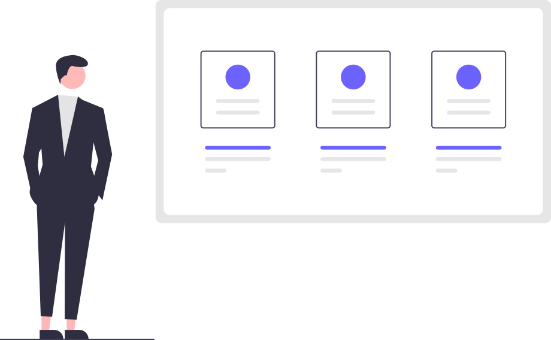

We don't want to show bullets in unordered list.we will remove that with CSS.
item one
item two
item three
Inline lists
Instead of going in a new row,we will create a list which will take columns.
item one
item two
item three
Reverse ordered list
something
something else
something elser
@nav
Navigation is used on top of page and used to get to different pages.
@header

adarsh balak the Web developer
@section
A section is used to seperate parts of pages.In marketing websites you would have seen a header followed by sections of feature,team,pricing,contact info etc.